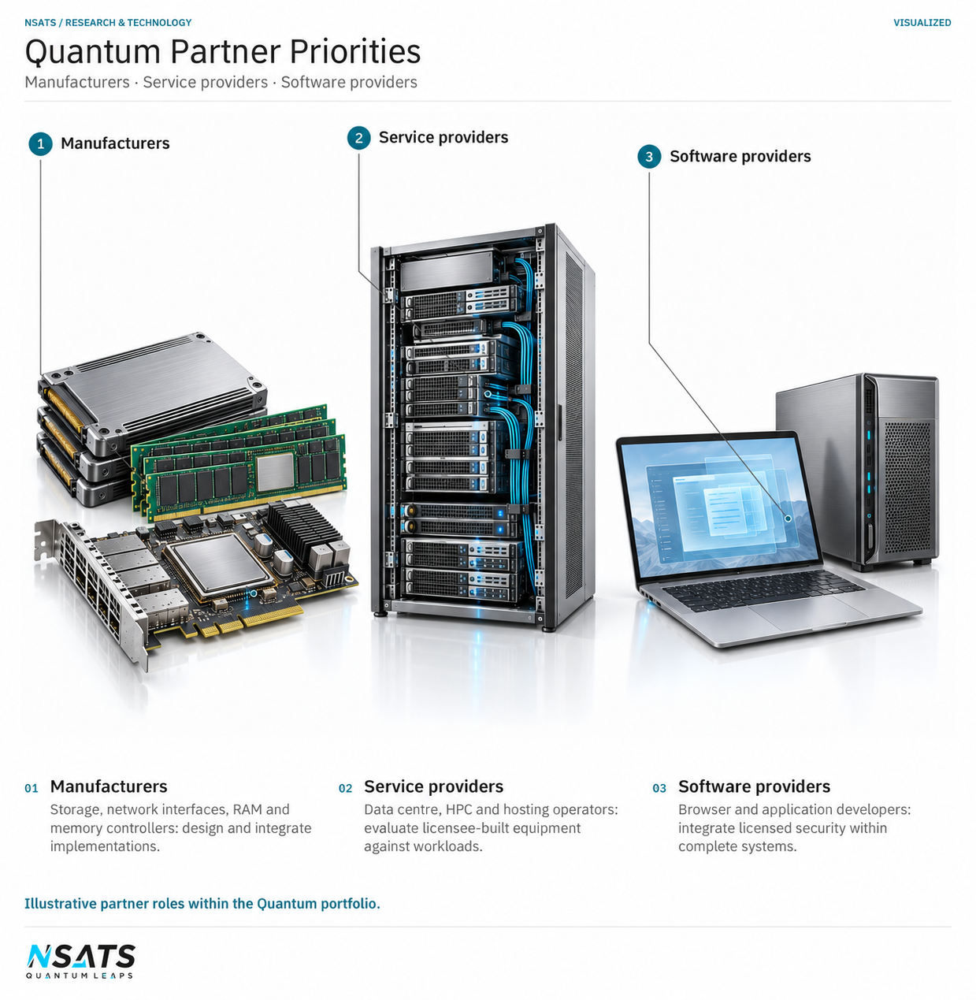

Current partnership priorities
Manufacturers contribute the component design, production and integration needed to incorporate the technology into equipment. Data centre, high-performance computing and hosting providers contribute the workloads and operating requirements against which that equipment can be assessed. Browser and application providers bring the expertise needed to deploy and operate licensed security software.
These roles can involve more than one organisation. A hosting provider, for example, may deploy equipment built by a manufacturer and operate the server software used to protect communication with a browser. The responsibilities for the equipment, software and service need to be clear when an implementation is assessed.
NSATS's Quantum technology is already licensed under signed agreements, including in these areas, and NSATS is seeking further partners.
Storage, network and memory manufacturers
NSATS seeks manufacturers able to incorporate its storage, networking and memory technology into computing equipment. The work includes component and controller design, production, system integration and product qualification, together with maintenance of the controller and firmware functions after release.
The implementations use specially designed classical chipsets and controllers. Existing drives and RAM require this added hardware to manage the relevant operations and connect them to the surrounding system. The manufacturer determines how those components fit within its product and how they interact with existing equipment and software.
NSATS’s quantum-classical bus carries electrical signals with more than two states, beyond binary 0 and 1. It supports faster processing, data transfer and decision making within a quantum-classical electronic device, with the result depending on how the technology is incorporated into the complete design.
Storage device manufacturers
The storage priority covers hard drives, solid-state drives, USB flash drives, optical storage and other storage devices. Temporal Compression enables manufacturers to increase effective capacity: the amount of original information that can be stored and retrieved within a given physical storage resource. An added chipset or controller manages the intermediate storage and retrieval operations.
The achievable increase depends on the data, the device and the complete implementation, including the supporting information needed to restore the original data. Manufacturers therefore need to account for the licensed gates, connections and processing functions together with the hardware and memory used to support them.
NSATS’s component-level reversible-computing arrangement retains input and output information in swap gates, with in-built memory using that information to regenerate earlier inputs. This is a limited, non-thermal form of reversibility; full-system reversibility remains under research.
Capacity and processing rate describe different properties. Capacity measures the amount of information retained and recoverable, while processing rate describes how quickly work is performed. Where effective capacity grows through processing, its growth rate and upper limit must also be established, alongside retrieval performance.
NSATS seeks manufacturers able to integrate the added controller, characterise storage and retrieval behaviour, and assess data integrity, reliability and compatibility using representative workloads.
Network interface manufacturers
NSATS seeks manufacturers of local area network cards and other network interfaces to incorporate its quantum-classical networking technology. The architecture uses a specialised network card at each end of a connection, with traffic passing through ordinary routers between the systems.
The work includes card design, integration with the host computer, driver development and testing in the intended network environment. Both endpoint systems and their internal connections contribute to the transfer, alongside compatibility with switches, routers, firewalls and other equipment on the route.
Assessment should measure the complete operation, from preparation at the sending system until the receiving application can use the information. This includes transmission and processing at both ends, rather than treating the link’s transmitted-bit rate as the application’s delivery rate.
RAM manufacturers and memory-controller designers
NSATS seeks RAM manufacturers and memory-controller designers to increase usable working-memory capacity and support faster access to data. An added, specially designed chipset or controller manages encoded information in existing classical RAM, allowing a larger active dataset to be accommodated within the available physical memory. The achievable result depends on the data and implementation.
The memory controller may sit in the processor, a chipset or a memory module, so the work involves the controller’s connection to the wider system as well as the memory devices themselves. Integration needs to preserve data integrity and supply information in the form required by the running application.
Working memory holds information needed during computation; retained storage keeps information for later use. Their capacity and access requirements must be assessed separately. Within working memory, access latency is the delay before requested data becomes available, while bandwidth is the rate at which data can be transferred. Increasing capacity alone does not establish how quickly a program will complete its work.
Data centre, HPC and hosting service providers
NSATS seeks data centre operators, high-performance computing centres, and data-hosting and web-hosting providers interested in deploying equipment built by manufacturers and integrators using its technology. These organisations contribute the workloads, infrastructure and service requirements needed to assess an implementation in its intended operating environment.
The technology can allow fewer hard drives and less memory to accommodate a given workload, support faster handling of data in working memory and enable lower chipset heat. The result depends on the selected technology, deployed design and workload. Storage capacity, working-memory requirements and network performance need to be measured separately to establish their contribution to the service.
For data centres, the assessment includes compatibility with existing equipment, storage and memory integration, and power and thermal behaviour. Chipset heat, server power and facility cooling remain separate measures: a change in one does not establish the saving in another.
High-performance computing centres can examine memory access, movement of data between computing resources and the time needed to complete representative calculations. Hosting providers can assess application responsiveness, data availability, separation between customers’ workloads and continuity during infrastructure changes. Web-hosting providers also operate the server side of the browser-security arrangement described below.
Compare the implementation with an established baseline using the same application task and service requirements. The workloads should reflect the data the service actually handles, including already compressed or encrypted information, with measurements covering storage, working memory, processing time, energy use and reliability.


Browser and application providers
NSATS seeks browser developers and application providers to use its licensed post-quantum security to protect information during communication, storage and processing. The technology uses classical computing methods inspired by quantum mechanics to address threats that quantum computing poses to cryptographic protection. The complete system must also address classical threats.
For browsers and the servers they connect to, NSATS licenses the security as software under standard software licence terms. The software runs at both ends of the connection, so deployment involves both the browser provider and the organisation operating the server. Larger systems incorporate the security into licensee-designed chips.
Protection also needs to cover information retained on the user’s device or elsewhere in the application. This depends on the operating system, servers and storage involved, together with the controls governing access to the information and its encryption keys.
Relevant expertise includes security architecture—how protection is organised across the system—and key management, which determines who may use keys, where they are held and how permission is withdrawn. The design needs to identify the information being protected, the quantum and classical threats it addresses, and each component’s responsibilities.
Independent assessment should examine the security within the complete implementation, including its relationship with existing standards, protocols and certificates. Partners also need arrangements for updates, interoperability and migration as threats and application requirements change, alongside the performance and usability requirements of their service.
Application evaluation
Define the application task, the existing equipment or software and the result the organisation needs to achieve. These details establish the scope of an evaluation and the conditions under which the proposed implementation will be assessed.
Discuss licensing
These partnership priorities concern Quantum. Enquiries about Geomagnetism can use the separate portfolio route below. Describe the application, equipment or service you intend to develop or operate, together with the technology you want to discuss.
If both portfolios are relevant, you can include them in one licensing enquiry. NSATS will handle the portfolio discussions separately.